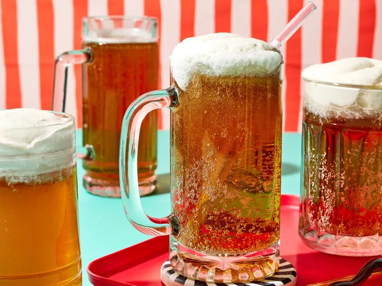

Butterbeer
Description
Butterbeer, featured in the Harry Potter series, is depicted as having a frothy, spicy, and creamy taste. The culinary team at Universal Orlando dedicated two years to researching and perfecting the (highly secret) recipe.
Ingredients
- 1/2 cup heavy cream
- 1/4 teaspoon ground cinnamon or pumpkin pie spice
- 1 pinch salt
- 2 tablespoons butterscotch topping
- 1 to 2 teaspoons lemon juice
- 6 (12 ounce) bottles cream soda
Directions
- Freeze 6 mugs or pint glasses until icy, at least 15 minutes. Meanwhile, for whipped topping, beat together cream, cinnamon, and salt in a medium bowl with an electric mixer at medium speed until stiff peaks form. Add butterscotch topping and lemon juice; beat again until soft peaks form.
- For each butterbeer, pour 1 can cream soda into a mug; top with about 2 tablespoons whipped topping. Serve immediately.
